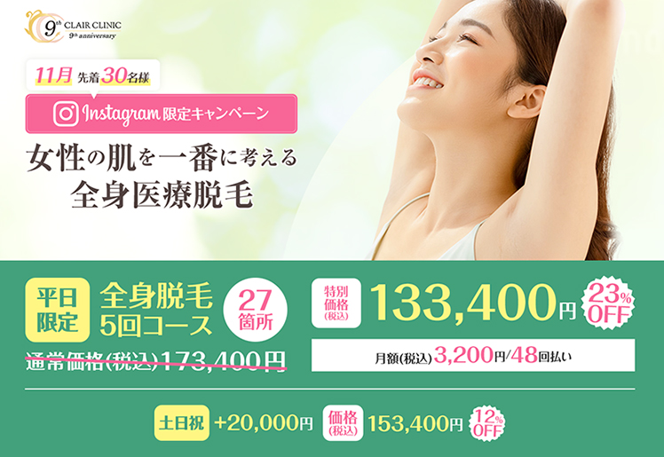
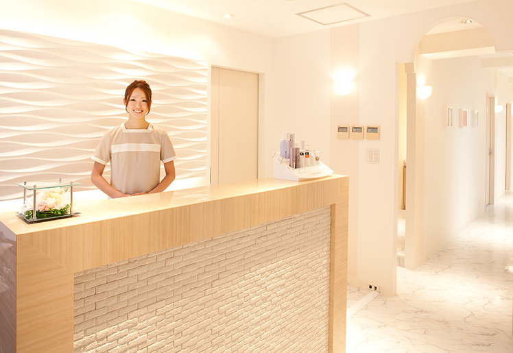
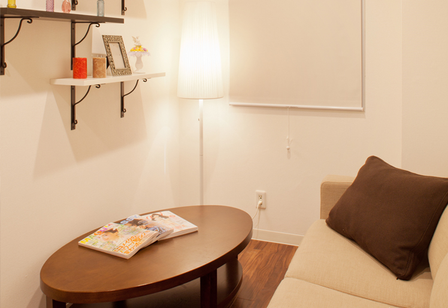

医療脱毛がインスタ限定で特別価格！全身脱毛5回コースを都内最安の133,400円（税込）で受けてみた体験談。
これは私が全身脱毛をしたときの体験談です。
全身脱毛をしてみたいけど、なかなか相談できる相手もいないので、悩んでいる女性のお役に立てばと思いお話します。
私は20代の会社員です。
高校生の頃から全身脱毛をしたいと思っていました。特に背中の毛が濃く、自己処理も出来ないのでずっとコンプレックスでした。
当時親に相談してみたところ、高校生で脱毛は必要ないと言われたのでガマンして、社会人になって自分で給料をもらえるようになったらしようと決めていました。
腕や脚なども毛は生えていたものの、自己処理が出来るので小まめにやっていたので大丈夫なんですが、背中は出来ないので男性に見られた時にどう思われるのか心配で、自分に自信が持てずにいました。
社会人になって自分で使えるお金が貯まってきた時に、どこで脱毛したらいいんだろう？誰に相談するんだっけ？と、ほとんど情報が無いことに気付きました。
まずはネットで情報収集。
情報収集してみて1番悩んだのが、エステサロンでやる「光脱毛」か、クリニックでやる「医療レーザー脱毛」どっちが良いのか。
Yahoo知恵袋や口コミサイトを見まくって、私なりに簡単にまとめた結果がこれ。
◎光脱毛（エステサロン）
・エステティシャンが施術を行う
・照射パワーは弱い
・痛みはレーザーよりは少なめ
・費用は医療レーザーより安い
・脱毛完了までの期間は長め（3～4年、施術回数平均12回以上）
・低価格なため予約が取りにくい
◎医療レーザー脱毛（クリニック）
・医師の監督のもと国家資格を持つ看護師が施術を行う
・照射パワーが強い
・光脱毛より痛みは強め
・費用は光脱毛より高め
・脱毛完了までの期間が短い（1～2年、施術回数平均5回）
・エステよりも予約は取りやすい
まさに一長一短な感じですが、私の場合はもともと痛みには割と強い自信があった事と、平日はフルで働いているので予約が取りにくいと、脱毛が完了するまでどれだけ時間が掛かるのか分からないなと思いました。以前から全身脱毛したいと思っていたので、一刻も早くスベスベにしたいという気持ちも強かったです。（笑）
もう一度母に相談してみたところ・・・
色々調べた結果をもとに母にも意見を聞いてみようと思い、費用は自分で用意したからと再度話をしてみました。
母の意見は「医療レーザー脱毛にしておきなさい。」でした。
実は母も若い時に全身脱毛をしていて、最初は安いからエステに行ったものの、通っている間は毛が細くなったり生えるのが遅くなったことを実感したものの、終了後しばらくすると毛が元に戻ってしまったようで、何回も通っているうちに医療レーザー脱毛よりもかえって費用が多くかかってしまったということです。
その後、改めて医療レーザー脱毛をしたためエステ脱毛に通った時間とお金が無駄になったと言っていました。
インスタで見つけたクレアクリニックの限定キャンペーン！

医療脱毛にすることを決めて、それからは具体的なクリニック選びを始めました。
ネットで情報収集していたからか、医療脱毛の広告なんかもSNSに広告が出てきてその中で見つけたのが「クレアクリニック」。
インスタで限定のキャンペーンページもあってとても詳しく書かれていました。
全身脱毛5回コースがインスタから申し込むと、公式サイト経由で申し込むよりも、40,000円引き！の特別価格で受けられるという事でした。
①全身脱毛5回コース（27箇所）：173,400円（税込）→133,400円（税込） ※23％OFF！、平日限定
②全身脱毛5回コース（27箇所）：173,400円（税込）→153,400円（税込） ※12％OFF！、土日祝も可
ネットで都内の医療脱毛クリニックを全部調べた結果、インスタ限定キャンペーンで申し込めば、全身脱毛の5回コース（顔・VIO除く）はクレアクリニックが都内で1番安いという事が分かりました。
| クリニック | 価格（税込） | 店舗数 |
|---|---|---|
| A社 | 207,900円 | 全国23店舗 |
| B社 | 269,800円 | 全国24店舗 |
| C社 | 173,800円 | 全国10店舗 |
| D社 | 174,900円 | 全国47店舗 |
| E社 | 198,000円 | 全国54店舗 |
| クレアクリニック | 133,400円 | 都内2店舗 |
最終的にクレアクリニックに決めようと思ったポイントは、これ↓。
・医療ローンで12回までの分割手数料がかからない
・20代女子が選んだ医療脱毛クリニック第1位
・自宅から通いやすい
・女性専用のクリニック
・医師とカウンセラーによるWカウンセリング
・完全個室制
クレアクリニックは新宿本院と渋谷院と2つあり、どちらも駅から徒歩5分と駅近です。私の家からは新宿の方が30分以内で行けて、職場との間にあるので会社の帰りに通えるので良いと思いました。
あとはやっぱり医療ローンで分割払いが手数料掛からずに出来ること。これはけっこう大きなポイントです。
ネットの口コミを見ても信頼できそうなクリニックでしたので、まずは無料カウンセリングを予約してみました。
無料カウンセリングに行ってみました。
 クレアクリニックは医療脱毛で9年の実績があるクリニックで、すごく清潔感のある院内です。
カウンセリングは、ドクターによる皮膚に関する医療的なカウンセリングと、カウンセラーの方と全身脱毛に関するお話やクリニックのことや料金のことなどについてお話をするWカウンセリングで安心です。
私はもともとインスタ限定キャンペーンの全身脱毛5回コースで133,400円と決めてましたので、カウンセリングではその確認と、痛みについてどれくらいなのかを教えてもらいました。

最初はカウンセリングのみで帰って、1週間後に施術をしてもらうことにしたのですが、カウンセリングルーム、施術ルーム、メイクルーム、全てが完全個室になっていて、プライバシーやリラックスできる環境づくりへの配慮が感じられます。
施術の内容・結果

施術当日は待合室に看護師の方が迎えに来て、最初に問診が有りました。
現時点での肌の状態、毛の状況、など丁寧な診察が有り、その後施術室に移動します。
施術室は少し寒かったですが、ベッドに温度調節をする機能が有り、施術中もずっと温かくウトウトしてしまうほどです。
最初に照射漏れの無いようにマーキングをして、施術部位を電動シェーバーで剃毛していきます。電動シェーバーは必ず個人個人に専用のものを用意しているそうで、衛生面でも安心でした。
その後、目をレーザーから保護するアイガードを乗せて照射してもらいますが、はじめはゆっくりと、肌と毛の反応を見ながら、痛みの具合を都度確認してくれました。
たぶん2時間くらいだと思いますが、意外とあっという間に終わった感じです。
照射終了後は肌に異常が無いか確認してくれて、クレアクリニックオリジナルのKAMAオイルを使って肌を優しくマッサージしてくれました。
アフターケアが終わった後に今後の施術についてのお話をして、その日はそれで家に帰りました。
話で聞いていた通り、施術後2週間くらいで毛がチラホラ抜けてきて、毛根が破壊されたんだなと実感しました。
※個人の感想であり、効果を保証するものではありません。
医療全身脱毛を体験した私の感想
エステか医療脱毛か、色々悩んでクレアクリニックさんで全身脱毛をやりましたが、終わってみると最初から医療脱毛でやって良かったと感じました。
クレアクリニックさんは、説明も施術も凄く丁寧で安心できますし、キャンペーン価格で安く施術を受けられるプランも有ったり、分割手数料無料の医療ローンも有りますので、興味のある方は無料カウンセリングを受けてみてはいかがでしょうか？
インスタ限定キャンペーンは、このページ（Beautybox）経由で申し込んだ場合の限定プランですので気を付けてください。（普通に公式サイトから申し込んでも特別価格にはなりません）
また、11月は先着30名となっているようですので終わってしまっていたらご了承ください。